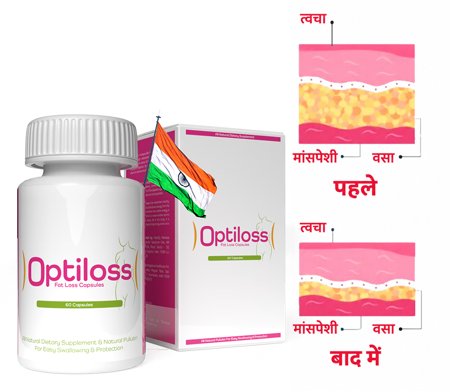
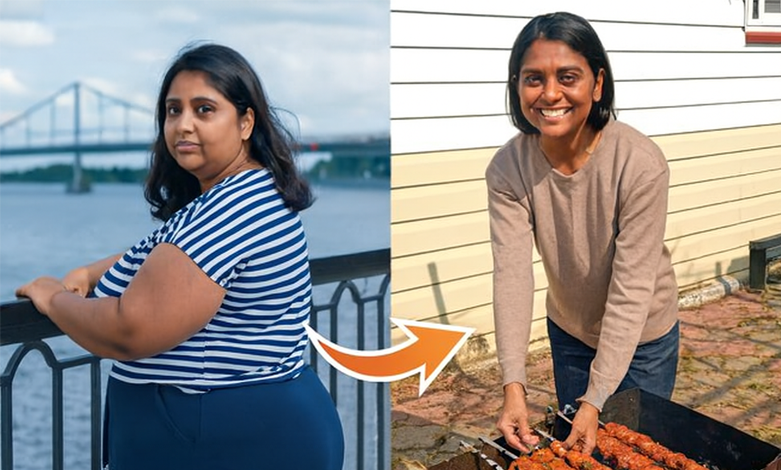
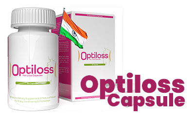
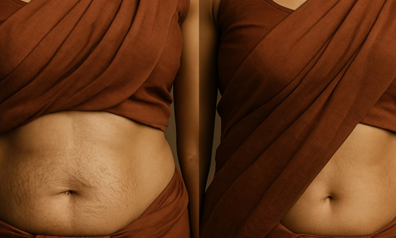
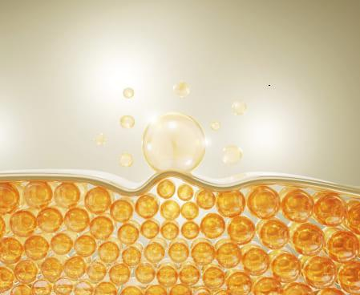
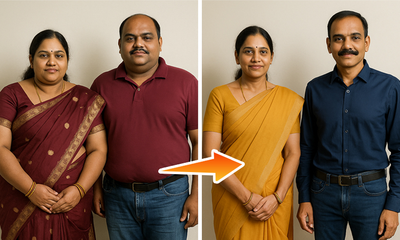
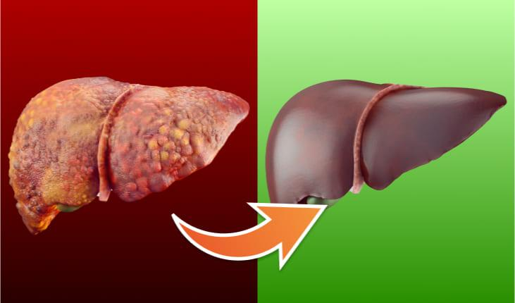
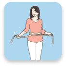
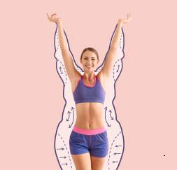
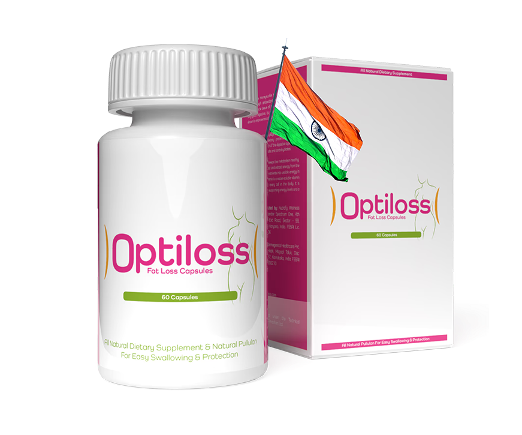

हैलो मैं हूँ डॉ. , बेंगलुरु में स्वास्थ्य विभाग के निदेशक। आज, मुझे आपके सामने आधुनिक विज्ञान की एक बड़ी उपलब्धि पेश करते हुए बहुत खुशी हो रही है: प्राकृतिक फॉर्मूला 'प्रोलिपोल'। . इसकी सुझाई गई खुराक रोज़ाना दो कैप्सूल है, जिसे खाने से पहले लेना बेहतर रहता है। इनके साधारण रूप को देखकर धोखा न खाएं। ; उनकी प्रभावशीलता बेहद दमदार है।

इसको धन्यवाद इस फॉर्मूले से आप बहुत जल्दी, 100% सुरक्षित तरीके से और बिना किसी मेहनत के अतिरिक्त चर्बी को खत्म कर देंगे। आपका शरीर अचानक पतला और सुडौल हो जाएगा, मानो आपने रोज़ व्यायाम किया हो और एक सख्त डाइट का पालन किया हो, लेकिन आपको ऐसा कुछ भी करने की ज़रूरत नहीं है।
इसके अतिरिक्त, आप शरीर की सारी चर्बी को ऊर्जा में बदल देंगे! क्या यह किसी चमत्कार जैसा लगता है ? थोड़ा-बहुत, लेकिन यह कोई चमत्कार नहीं है। यह पूरी तरह से विज्ञान है।
"मैं किसी राक्षस की तरह खाता हूँ, फिर भी एकदम दुबला-पतला हूँ!"

हमारी कंपनी में एक कैंटीन है, जहाँ आप अपनी पसंद की कोई भी चीज़ ले सकते हैं और उसका भुगतान वज़न के हिसाब से कर सकते हैं। लगभग एक महीने पहले जब से मैंने यह 'प्रोलिपोलिक' फॉर्मूला इस्तेमाल करना शुरू किया है, मैं वहीं खाना खाता हूँ और अपनी पसंद की हर चीज़ लेता हूँ: आलू, स्टेक, पास्ता... और मैं मीठा (डेज़र्ट) लेना कभी नहीं भूलता: पुडिंग या क्रीम। बहुत ही स्वादिष्ट!
मेरे सहकर्मी, जो पहले मेरा वजन ज्यादा होने पर मेरा मजाक उड़ाया करते थे, अब सलाद और कम फैट वाला दही खाते हैं। वे भूखे और परेशान रहते हैं, जबकि मैं पेट भरा हुआ और संतुष्ट महसूस करता हूँ! हाल ही में आए एक नए पड़ोसी ने, जो अभी काफी युवा हैं, मुझसे पूछा कि क्या मैं कोई स्पोर्ट्स कोच हूँ—क्योंकि इस उम्र में भी मेरा शरीर काफी फिट है। मैं हैरान रह गया!
अदिति आचार्य, 51 साल के, बेंगलुरु में अकाउंटेंट
7 हफ्तों में 48 किलो वजन कम किया।
लिपोसक्शन से बेहतर
वैज्ञानिक मजाक में प्रोलिपोलिक फॉर्मूले को "बोतल में लिपोसक्शन" कहते हैं। वास्तव में, इसके प्रभाव सर्जिकल लिपोसक्शन के समान हो सकते हैं। हालांकि, प्रोलिपोलिक फॉर्मूला वजन घटाने के लिए, लिपोसक्शन की तुलना में इसके कई फायदे हैं:
- इसमें बहुत ज़्यादा पैसे नहीं लगते
- इससे स्वास्थ्य को कोई खतरा नहीं है
- वास्तव में प्रभावी है
सर्जिकल लिपोसक्शन
- कम से कम ₹90,000 का खर्च आता है
- हर ऑपरेशन शरीर के केवल एक हिस्से से संबंधित होता है।
- इससे आपका लगभग 4 किलोग्राम वजन कम हो सकता है
- निकाली गई चर्बी को नष्ट कर दिया जाता है।
- अस्पताल में भर्ती होने और चिकित्सीय देखभाल की आवश्यकता होती है
- ऑपरेशन के कारण कुछ दुष्प्रभाव हो सकते हैं: दर्द, सूजन, जलन।
- प्रक्रिया के बाद कम कैलोरी वाले आहार की आवश्यकता होती है
- सर्जरी के बाद खेल-कूद की गतिविधि ज़रूरी है
प्रोलिपोलिक फॉर्मूला

- कोई अधिक खर्च नहीं, क्योंकि इसकी भरपाई हो जाती है।
- आपके पूरे शरीर का वज़न कम होता है।
- आप जितना चाहें उतना वज़न कम कर सकते हैं - 3 हफ़्तों में 10 kg तक।
- शरीर की चर्बी ऊर्जा में बदल जाती है
- शरीर की चर्बी ऊर्जा में बदल जाती है
- यह फॉर्मूला 100% सुरक्षित है, इससे कोई साइड इफ़ेक्ट नहीं होता और यह अन्य इलाजों के साथ कोई विपरीत प्रतिक्रिया नहीं करता है।
- खान-पान या खाने की आदतों में किसी बदलाव की आवश्यकता नहीं है
- इसमें किसी अतिरिक्त शारीरिक गतिविधि या शारीरिक श्रम की आवश्यकता नहीं होती है।
इससे कोई फर्क नहीं पड़ता कि आपका वजन ज्यादा क्यों है, मायने यह रखता है कि आप इससे छुटकारा पाना चाहते हैं।
वजन बढ़ने का कोई एक कारण नहीं होता, बल्कि इसके कई कारण हो सकते हैं। हो सकता है कि आप बहुत ज़्यादा खाते हों और बहुत कम व्यायाम करते हों। आपको कोई हार्मोनल समस्या या ऐसी बीमारी हो सकती है जिससे वज़न बढ़ता है। हो सकता है कि आपको स्टेरॉयड लेने पड़ते हों, या फिर मोटापा आपके जीन में हो। यही वजह है कि कभी-कभी सिर्फ़ डाइट और व्यायाम से वज़न कम करना नामुमकिन हो जाता है। और पता है क्या?
इससे कोई फर्क नहीं पड़ता। प्रोलिपोलिक फॉर्मूले के साथ, आपके अतिरिक्त वजन का स्रोत मायने नहीं रखता। यहाँ, वसा ऊतक ही मुख्य कारक है। इसे लक्षित किया जाता है और फॉर्मूला बेरहमी से काम करता है... परिणामस्वरूप, आप जल्दी, आसानी से और सुखद तरीके से वजन कम करते हैं।
इससे कोई फर्क नहीं पड़ता कि आपका वजन कितना ज्यादा है। चाहे आप 7, 17 या 77 किलो वजन कम करना चाहते हों, आप बिना किसी परेशानी के ऐसा कर पाएंगे। आप जितना ज्यादा वजन कम करना चाहते हैं, आपको 'प्रोलिपोलिक' (Prolipolic) फॉर्मूले का उतना ही ज्यादा इस्तेमाल करना चाहिए, जो पूरी तरह से सुरक्षित है।
पतले होने की राह पर त्वचा में कसावट: हमारे उत्पाद के रहस्य
यह न केवल आपका अतिरिक्त वजन कम करने में मदद करता है, बल्कि त्वचा को ढीला होने से भी रोकता है। इसकी मदद से, आप त्वचा का लचीलापन खोने की चिंता किए बिना मनचाहे परिणाम पा सकते हैं। हमारे प्रोडक्ट के फॉर्मूले में ऐसे तत्व शामिल हैं जो त्वचा के लचीलेपन और पोषण को बेहतर बनाने में मदद करते हैं। साथ ही, तेजी से वजन कम होने के दौरान भी यह त्वचा की कसावट को बनाए रखता है। हम यह सुनिश्चित करते हैं कि आपका वजन कम करने का सफर आरामदायक और सुरक्षित हो। हमारे प्रोडक्ट के साथ, आप निश्चिंत रह सकते हैं कि आपकी त्वचा लचीली और खूबसूरत बनी रहेगी।

एक कैप्सूल 100 तक फैट सेल्स को खत्म कर सकता है।
प्रोलिपोलिक फॉर्मूला वसा जलाने में इतना प्रभावी इसलिए है क्योंकि यह कोशिकीय स्तर पर काम करता है। एक कैप्सूल में 100 तक स्मार्ट अणु होते हैं। जो लेज़र की सटीकता के साथ वसा कोशिकाओं को घुला देते हैं। ये अणु शरीर द्वारा अवशोषित होने के ठीक 4 सेकंड बाद वसा कोशिकाओं में प्रवेश करने के लिए प्रोग्राम किए गए होते हैं। फिर, इनके अंदर एक बहुत ही सरल प्रतिक्रिया होती है।
जब प्रोलिपोलिक फॉर्मूले का एक स्मार्ट अणु वसा कोशिका तक पहुँचता है, तो वह अंदर प्रवेश करता है और उसे अंदर से प्रभावित करता है। फिर, वसा कोशिका 3 हिस्सों में टूट जाती है: एक ऊर्जा इकाई, पानी और कार्बन डाइऑक्साइड। इसका अर्थ क्या है?

इसका अर्थ यह है कि प्रोलिपोलिक सूत्र को लेने से, आप अनचाही चर्बी को ऊर्जा में बदल देते हैं। आपकी मांसपेशियां और दिमाग मजबूत होंगे, और आप खुद को अधिक ऊर्जावान और आशावादी महसूस करेंगे। आपके लिए कोई भी काम करना मुश्किल नहीं होगा। सीढ़ियां चढ़ते समय या बस स्टॉप तक पैदल जाते समय अब आप न तो थकेंगे, न ही आपको पसीना आएगा और न ही आपकी सांस फूलेगी। आप हल्का महसूस करेंगे, और शारीरिक गतिविधियां आपके लिए सचमुच आनंददायक बन जाएंगी।
और फैट सेल्स से बनने वाले पदार्थों, यानी पानी और कार्बन डाइऑक्साइड का क्या होता है? आप पानी को पेशाब के ज़रिए और कार्बन डाइऑक्साइड को सांस लेने की प्रक्रिया के ज़रिए बाहर निकाल देते हैं। यह एक बेहद कारगर और बहुत ही सरल प्रक्रिया है!
"मैंने कभी जिम में कदम भी नहीं रखा, फिर भी मेरे एब्स एकदम सुडौल हैं।"

मैंने अपनी पत्नी के लिए यह ट्रीटमेंट खरीदा था। सच कहूं तो, जब उसने इसे लेना शुरू किया, तो मैं उस पर हंसा था। किसे पता था कि कैप्सूल से फैट कम हो सकता है? लेकिन जब मैंने देखा कि उसका वजन 20 किलो से ज्यादा कम हो गया है, तो मेरी हंसी बंद हो गई। अब उसका पेट एकदम सपाट है और पैर सुडौल हैं। वह पूरी तरह से बदल गई है। उसके बगल में खड़ा होकर, अपने निकले हुए पेट के साथ, मैं किसी राक्षस जैसा लग रहा था।
मैंने भी इन्हें लेना शुरू कर दिया। सच कहूँ तो, अब मेरे एब्स एकदम साफ दिखने लगे हैं। लेकिन ऐसा इसलिए नहीं है कि मैंने बीयर पीना छोड़ दिया है, या पिज़्ज़ा और फ्राइज़ खाते हुए फ़ुटबॉल मैच देखना बंद कर दिया है। जब मैं अपने सहकर्मियों से कहता हूँ कि मैं जिम नहीं जाता, तो वे मेरी बात पर यकीन ही नहीं करते। पर मैं सच में नहीं जाता। भला मैं जाऊँ भी क्यों?
रवि नायर, जयपुर के 37 वर्षीय बस ड्राइवर
4 हफ्तों में 22 किलो वजन कम किया।
देखें कि यह कितना आसान है:
दिन में दो बार, एक गिलास पानी के साथ 'प्रोलिपोलिक फॉर्मूला' का एक कैप्सूल लें।
इसमें बस 30 सेकंड लगते हैं। सुबह एक कैप्सूल लें और शाम को दूसरा कैप्सूल, 200 ml पानी के साथ लें। बहुत जल्दी, आपके फैटी टिश्यू ऊर्जा में बदलने लगेंगे। फिर आपको अपनी सुबह की कॉफी की भी ज़रूरत नहीं पड़ेगी!
वसा ऊतकों को जलाएं।
आप साफ़ तौर पर ज़्यादा ऊर्जावान और हल्का महसूस करेंगे। आपके शरीर से चर्बी सचमुच गायब होने लगेगी। बेल्ट पहनना न भूलें, क्योंकि शाम तक आपकी पैंट काफी ढीली हो सकती है। यह इतनी तेज़ी से होता है!
एक सुडौल और फिट शरीर का आनंद लें।
3 हफ़्तों के बाद, आपका वज़न 10 किलो कम हो जाएगा, या शायद उससे भी ज़्यादा! सेल्युलाईट का नामोनिशान नहीं बचेगा। आपकी त्वचा कसी हुई और मुलायम हो जाएगी। आप छोटे साइज़ के कपड़े पहन पाएँगी और लोग आपकी तारीफ़ करेंगे। लोग आपसे पूछेंगे:" आप अपनी मनपसंद चीज़ें खाकर भी वज़न बढ़ाने के बजाय उसे कम कैसे कर सकते हैं?". इस सवाल का जवाब देने के लिए तैयार रहें... अगर आप और भी ज़्यादा वज़न कम करना चाहते हैं, तो इस फ़ॉर्मूले का इस्तेमाल जारी रखें और बिना किसी मेहनत के 100 किलो तक वज़न कम करें।
मैं अपनी दूसरी जवानी जी रहा हूँ!
मैं पहले ही मेनोपॉज़ के दौर से गुज़र रही थी, और हम जानते हैं कि इस दौरान मेटाबॉलिज़्म धीमा हो जाता है। इसके अलावा, मैं दवाइयाँ और स्टेरॉयड भी ले रही थी। मेरी तबीयत बहुत खराब थी और मेरा वज़न इतना बढ़ गया था कि मैं बिल्कुल सुमो पहलवान जैसी दिखने लगी थी। मैं एक के बाद एक कई न्यूट्रिशनिस्ट और डॉक्टरों के पास गई। और उन सभी ने मुझे एक ही बात कही—कि मैं अपना वज़न कम नहीं कर पाऊँगी, हालात ऐसे ही हैं और मुझे इसे स्वीकार कर लेना चाहिए। एक डॉक्टर ने तो मुझ पर हँस भी दिया, जब मैंने उनसे पूछा कि क्या मुझे यह इलाज आज़माना चाहिए। उन्होंने कहा कि इससे मुझे बस एक ही चीज़ मिलेगी—और वह है बहुत तेज़ दस्त (डायरिया)...
लेकिन जब मैं दो महीने बाद उससे मिलने गया—41 किलो वजन कम करके—तो वह अवाक रह गया। शर्म के मारे उसे समझ नहीं आ रहा था कि वह कहाँ छिपे।
वे मुझे यकीन दिलाना चाहते थे कि मेरे लिए अब कोई उम्मीद नहीं बची है। मुझे डर था कि मैं इतना मोटा हो जाऊंगा कि मुझे घर से बाहर निकालने के लिए क्रेन की जरूरत पड़ेगी। लेकिन मैंने खुद ही कमान अपने हाथों में ले ली। अब मैं दुबला-पतला हूँ और मुझे एक नई जिंदगी मिल गई है! यह सब करना सार्थक रहा!
Ishita Raghavan, 68 साल के, चेन्नई से रिटायर हुए
8 हफ्तों में 41 किलो वजन घटाया।
यह बहुत महत्वपूर्ण है: विसरल फैट अब आपकी उम्र कम नहीं करेगा।
विसरल फैट वह चर्बी है जो आपके पेट और छाती में जमा हो जाती है। यह चर्बी आपके अंगों, जैसे कि दिल, फेफड़ों, गुर्दों, लिवर और अग्न्याशय (पैंक्रियाज) से चिपक जाती है। इस चर्बी की अधिक मात्रा इन अंगों के लिए बेहद हानिकारक होती है और उन्हें ठीक से काम करने से रोकती है। इसके अलावा, यह चर्बी भारी धातुओं और विषाक्त पदार्थों को इकट्ठा कर लेती है, जो आपके शरीर को नुकसान पहुँचाते हैं।
विसेरल फैट और इसमें मौजूद हानिकारक तत्व आपके शरीर के मुख्य अंगों को नुकसान पहुँचाते हैं। आपके दिल की खून पंप करने की क्षमता कम होती जाती है, और आपकी किडनी उसे साफ नहीं कर पातीं। इसीलिए विसेरल फैट को कम करना बहुत ज़रूरी है। वैज्ञानिक कई सालों से चेतावनी दे रहे हैं कि शरीर में ज़रूरत से ज़्यादा विसेरल फैट होने से इंसान की उम्र औसतन 14 साल तक कम हो सकती है।

प्रोलिपोल फॉर्मूला आपके शरीर से खतरनाक विसरल फैट, साथ ही भारी धातुओं और विषाक्त पदार्थों को खत्म कर देगा। फैट से मुक्त और विषाक्त पदार्थों से शुद्ध होने के बाद, आपके अंग बहुत राहत महसूस करेंगे। आपके पास कम से कम 5 गुना अधिक ऊर्जा होगी और आप 20 साल छोटे महसूस करेंगे!
वसा ऊतक सचमुच ऐसे पिघल जाते हैं जैसे... कड़ाही में मक्खन।
सोचिए कि आप एक गर्म पैन में मक्खन डालते हैं। देखिए, वह कैसे पिघल जाता है? ठीक इसी तरह, 'प्रोलिपोल' (Prolipol) फॉर्मूले का इस्तेमाल करने पर आपके शरीर के फैटी टिश्यू भी गायब हो जाएंगे।
मैं इसे एक बार फिर दोहराता हूँ:
- किसी डाइट की ज़रूरत नहीं
- किसी खेल गतिविधि की आवश्यकता नहीं है
- आपके जीवन में किसी बदलाव की ज़रूरत नहीं है
प्रोलिपोल फॉर्मूला सीधे फैट सेल्स पर काम करता है, जो इसे वजन कम करने का एकमात्र क्रांतिकारी और असरदार तरीका बनाता है।
आपके स्वास्थ्य के लिए 100% सुरक्षा
प्रोलिपोल फॉर्मूले में वसा को घोलने वाले अणु बुद्धिमानी से काम करते हैं। वे इस प्रकार "प्रोग्राम किए गए" हैं कि... केवल वसा कोशिकाओं पर काम करते हैं। ये अणु मानव शरीर की अन्य कोशिकाओं को दिखाई नहीं देते। यह एक बहुत बड़ा फायदा है। इसलिए, प्रोलिपोल फॉर्मूला से आपके शरीर को नुकसान पहुँचने का जोखिम 0% है। यह 100% गारंटीकृत है और सुरक्षा तथा प्राकृतिक होने के प्रमाण-पत्र द्वारा प्रमाणित है।
प्रोलीपोल फॉर्मूले का एक और बहुत महत्वपूर्ण लाभ, विशेष रूप से महिलाओं के लिए, यह है कि यह सेल्युलाईट को 100% खत्म करता है सिर्फ 3 दिन के इस्तेमाल के बाद!
"किसी को यकीन नहीं था कि मैं सफल हो पाऊँगा..."
प्रेग्नेंसी के बाद, मेरे पेट और कूल्हों की चर्बी कम ही नहीं हो रही थी। मेरी डबल चिन भी हो गई थी। मेरी माँ, चाचियों और सभी सहेलियों ने मुझसे कहा कि औरतों का शरीर तो ऐसा ही होता है... और यह कि स्लिम फिगर न होने का रोना रोने के बजाय, मुझे अपने पति और बेटे का ख्याल रखना चाहिए। सच में? मैं कोई बहुत बड़ी उम्र की नहीं हूँ, और इस तरह के शरीर के साथ मेरी बिल्कुल भी इच्छा नहीं थी कि मैं पूल में या छुट्टियों पर जाकर खुद को दिखाऊँ। पता नहीं मेरा क्या हाल होता, अगर मैंने इस ट्रीटमेंट के बारे में वह लेख न पढ़ा होता। एक महीने बाद, मैं फिर से उतनी ही स्लिम हो गई हूँ जितनी प्रेग्नेंसी से पहले थी। बल्कि, अब तो मैं पहले से भी बेहतर दिखती हूँ, क्योंकि पहले मेरे शरीर पर सेल्युलाईट था और त्वचा भी थोड़ी ढीली थी।
अब मेरी बॉडी एकदम टोन हो गई है, जैसे कि मैंने पैट्री जॉर्डन के साथ रोज़ ट्रेनिंग की हो। हाहाहा।
अनन्या सिंह 33 साल के, जयपुर में शिक्षक
4 हफ्तों में 19 किलो वजन कम किया।
प्रोलिपोल फॉर्मूले की बदौलत:
आप अपने शरीर में जमा सारी चर्बी को ज़रूरी ऊर्जा में बदलना शुरू कर देंगे। मान लीजिए, यह एक कमाल का बदलाव है।
आप 3 दिनों में सेल्युलाईट को 100% खत्म कर देंगे और 3 हफ्तों में 10 किलो की दर से वजन कम करना शुरू कर देंगे। आपको अपने शरीर को लेकर फिर कभी शर्मिंदगी महसूस नहीं होगी। आप बिना किसी झिझक के बीच, पूल या सॉना में गर्व के साथ खुद को दिखा सकेंगे। आप अपनी पसंद के कोई भी कपड़े पहन सकेंगे, न कि सिर्फ वे जो आपको फिट आते हैं।S
आप अपनी सेहत बचाते हैं! आप अपने शरीर से जमा गंदगी, विषाक्त पदार्थों और भारी धातुओं को बाहर निकाल सकेंगे। आपका शरीर अंदर से धीरे-धीरे नष्ट नहीं होगा। सबसे महत्वपूर्ण बात यह है कि अतिरिक्त वजन कम करने से आपके जोड़ों पर दबाव कम होगा और वे खराब होने से बचेंगे। आप अपने ब्लड शुगर और कोलेस्ट्रॉल के स्तर को सामान्य कर सकेंगे। आप खुद को डायबिटीज, धमनियों की कठोरता (आर्टेरियोस्क्लेरोसिस), स्ट्रोक और अन्य बीमारियों से बचा सकेंगे। कुल मिलाकर, आप अपना जीवन लंबा कर सकेंगे।
अब स्लिम बनने के रास्ते में कोई रुकावट नहीं है।
ज़ाहिर है, आपको भूखा रहना और खाने का मज़ा छोड़ना बिल्कुल पसंद नहीं होगा। आप अपनी पसंद की चीज़ें खाना चाहते हैं, न कि सिर्फ वो जो आपको खाने की इजाज़त दी गई है। क्या यह बात दुबले होने की राह में रुकावट बन सकती है? अब और नहीं!
आप S साइज़ पहनते हुए भी अपने पसंदीदा व्यंजनों और मिठाइयों का आनंद ले सकते हैं। आपके कूल्हों और जांघों पर सेल्युलाईट का एक मिलीमीटर भी नहीं बचेगा। आखिरकार आप एक स्लिम शरीर के साथ खुश और स्वस्थ इंसान बन सकती हैं। और वह भी सिर्फ 21 दिनों में!
मैं आपको व्यायाम करने से रोकना नहीं चाहता, लेकिन... अब आपके पास एक ऐसा तरीका है जिससे आप बिना ट्रेनिंग के भी फैट बर्न कर सकते हैं। आपका शरीर इतना एथलेटिक हो जाएगा कि लोगों को लगेगा कि आप रोज़ जिम जाते हैं या दौड़ते हैं।
संक्षेप में: वजन घटाने के लिए प्रोलिपोल का फार्मूला:
इसे इस्तेमाल करना आसान है: बस 200 ml पानी के साथ एक कैप्सूल लें, जिसमें दिन भर में केवल 30 सेकंड का समय लगता है।
यह लिंग, उम्र, अधिक वजन के कारणों और इसकी अवधि की परवाह किए बिना काम करता है।

वजन में भारी कमी की गारंटी: 3 हफ्तों में कम से कम 10 किलो वजन कम होगा, साथ ही त्वचा में कसावट आएगी और सेल्युलाईट पूरी तरह खत्म हो जाएगा।
इसमें किसी डाइट, वर्कआउट या जीवनशैली में बदलाव की आवश्यकता नहीं है।
यह अधिक वजन के कारण होने वाली गंभीर बीमारियों से स्वास्थ्य की रक्षा करता है और शरीर से विषाक्त पदार्थों को बाहर निकालता है।
यह शरीर के लिए 100% सुरक्षित है और इसका कोई दुष्प्रभाव नहीं होता है।
अतिरिक्त वजन के खिलाफ लड़ाई में आपकी जीत की गारंटी
प्रोलिपोल फॉर्मूला, डाइट और ट्रेनिंग की तुलना में फैट को ज़्यादा तेज़ी से बर्न करता है। यह इस बात की परवाह किए बिना काम करता है कि अतिरिक्त वज़न कितना है, इसके कारण क्या हैं, या यह कितने समय से है।
20 से अधिक वर्षों के शोध के बाद विकसित 'स्मार्ट मॉलिक्यूल्स', चिकित्सा के क्षेत्र में एक वास्तविक क्रांति हैं। इनकी बदौलत, इस उपचार को चुनते समय आपको संतुष्टि की पूरी गारंटी मिलती है।
प्रभावशीलता की गारंटी
वजन घटाने के लिए 'प्रोलिपोल' (Prolipol) फॉर्मूले की प्रभावशीलता 27 प्रयोगशाला अध्ययनों में निस्संदेह साबित हो चुकी है। दुनिया भर के 9 अनुसंधान केंद्रों में इसका गहन विश्लेषण किया गया है। 30,000 से अधिक लोगों ने, जिन्होंने इस फॉर्मूले की मदद से अपना वजन कम किया है, इसकी प्रभावशीलता की पुष्टि की है।
गुणवत्ता की गारंटी
इस उत्पाद में अद्वितीय 'प्रोलिपोल' (Prolipol) फॉर्मूला शामिल है, जो फैटी टिश्यू को जलाता है। आप निश्चिंत रह सकते हैं कि आपको असली फॉर्मूला ही मिल रहा है, जो केवल एशियन मिनिस्ट्री ऑफ हेल्थ की आधिकारिक वेबसाइट पर ही उपलब्ध है।
सुरक्षा की गारंटी

प्रोलिपोल फॉर्मूला ट्रीटमेंट को विशेष रूप से केवल फैट सेल्स पर काम करने के लिए डिज़ाइन किया गया है। यह मानव शरीर की किसी अन्य कोशिका (सेल) को प्रभावित नहीं करता है। वैज्ञानिक शोध से स्पष्ट है कि इस ट्रीटमेंट के बाद साइड इफेक्ट्स का जोखिम 0% है।
हर कोई स्वास्थ्य और सुंदरता का हकदार है।
अगर 'प्रोलिपोलिक' फॉर्मूला कुछ साल पहले ही विकसित कर लिया गया होता, तो इससे बहुत सारी तकलीफों को रोका जा सकता था। ज़्यादा वज़न की वजह से कितने ही लोग डायबिटीज़ या आर्टेरियोस्क्लेरोसिस (धमनियों के सख्त होने) जैसी बीमारियों से पीड़ित हुए और समय से पहले ही जान गंवा बैठे? कितने ही लोग आज भी जोड़ों के दर्द, स्लीप एप्निया या कमज़ोर दिल जैसी समस्याओं से जूझ रहे हैं... और कितने ही लोग ऐसे हैं जो बार-बार डाइटिंग में फेल होने की वजह से पैदा हुए हीन-भाव या डिप्रेशन से रोज़ लड़ रहे हैं?
अच्छी बात यह है कि वह सब खत्म हो गया है! सारी तकलीफें खत्म हो गई हैं। हर कोई एक सुडौल और स्वस्थ शरीर पाने का हकदार है। हर किसी को अपने रूप-रंग पर गर्व करने का हक है।
वजन घटाने का एक ऐसा तरीका जो बाकी सभी तरीकों को मिलाकर भी उनसे दस गुना बेहतर है
क्या आप जानते हैं...
एक साल पहले, एक ठग ने 'प्रोलिपोलिक' (Prolipolic) फॉर्मूले का इस्तेमाल करके पैसे कमाए। उसने लोगों को यह यकीन दिलाया कि इससे उनका वजन कम करने में मदद मिलेगी। एक वैज्ञानिक, जो एशियाई स्वास्थ्य मंत्रालय का पूर्व कर्मचारी था, ने प्रयोगशाला से यह फॉर्मूला चुरा लिया था।
सबसे बुरी बात यह है कि इस ठग ने खुद को एक 'हीलर' (उपचार करने वाला) बताया। उसने 'वजन घटाने के अनुष्ठान' करने के लिए एक फॉर्मूले का इस्तेमाल किया और लोगों से कहा कि वह अपनी अलौकिक शक्तियों से उनका इलाज कर रहा है। इसके लिए वह 10,000 डॉलर तक की मांग कर रहा था।
वजन को असरदार तरीके से कम करने और अपनी सेहत वापस पाने के लिए अब आपको बहुत सारा पैसा खर्च करने की ज़रूरत नहीं है।
अच्छी बात यह है कि अब आपको वजन कम करने के लिए ₹70,000 से ज़्यादा खर्च करने की ज़रूरत नहीं है। कल से ही आप 'प्रोलिपोलिक' (Prolipolic) फॉर्मूला अपने घर पर मंगा सकते हैं और बहुत कम खर्च में 3 हफ़्तों के अंदर 10 किलो वज़न कम करना शुरू कर सकते हैं।
हमने भारत में इस फॉर्मूले का विपणन इस नाम से किया: . इस कीमत में केवल फैट जलाने वाले स्मार्ट मॉलिक्यूल्स को निकालने का खर्च शामिल है। अब तक, आपको इलाज के लिए पूरी कीमत चुकानी पड़ती थी।
तथापि, आपको 50% की छूट का लाभ मिलेगा। जिससे आप आधी कीमत पर इलाज करवा सकते हैं। इस तरह, एक छरहरे, बेझिझक और स्वस्थ शरीर—जो सकारात्मक ऊर्जा से भरपूर हो—को पाने के रास्ते में पैसा कोई रुकावट नहीं बनेगा।
यह आप पर निर्भर है: क्या आप बिना किसी मेहनत के 3 हफ्तों में 10 किलो तक वजन कम करना चाहते हैं?
बेहतर बदलाव की शुरुआत करें। वह पाएं जिसके आप हकदार हैं: अच्छा स्वास्थ्य और एक खुशहाल जीवन। 'प्रोलिपोलिक' (Prolipolic) फॉर्मूला पाने के लिए ऑर्डर फॉर्म भरें, जिसमें एक नॉन-रिफंडेबल फाइनेंसिंग ऑफर भी शामिल है।
मैं गारंटी देता हूँ कि 21 दिनों में जब आप आईने में देखेंगे, तो आपको एक ऐसा इंसान दिखेगा जिसका वज़न 10 किलो कम हो चुका होगा। आप मुस्कुराएंगे और अपनी आँखों में खुशी देखेंगे। आप खुद से कहेंगे: "हाँ, वह बिल्कुल सही फैसला था!" और आप बहुत आभारी महसूस करेंगे।
